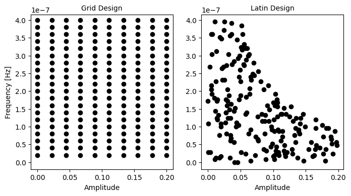

Sweep generation#
While discussing the prototyping of Exa Experiment s, we
learnt that any experimental setting can be swept, and we saw a simple sweep generation function in the
subclassing chapter. Here, we will talk about the default sweeps in more detail and explore ways
to design your experiments effectively.
When you sweep a setting, Exa executes multiple experiments, one per each value, and returns the results back to you
aggregated into a xarray.Dataset, where the sweep name becomes a coordinate, and most of the time, also
a dimension of the measured data xarray.DataArray. Just like we saw with our Bell state experiment, where
phase became such a coordinate.
What can actually be swept?#
Note
Q: Wait a second, you just said that every setting can be swept! What is happening?
A: You can create a Sweep from any Setting,
that much is absolutely true. It is done through the sweep() method, like
demonstrated before, and you can add that sweep to your experiment. However, not every sweep will affect execution
of your experiment directly, or at all. Some settings are given as information, which can be used and referenced,
and so is valuable, but does not do anything or cannot be set at the instrument level. Some settings have an
explicit read_only property, which prevents them from being changed or swept. This is what this section
is about.
In Exa, the setting tree is a SettingNode object, containing 5 separate sections:
Controllers. This section contains all the settings that directly affect some instrument participating in experiment execution. This is the only section which is actually submitted to the station. Modifying most of the settings here, via a sweep or otherwise, will turn some knob or change a value somewhere in the laboratory. Some of the settings are just references and cannot be changed, however. They are still included in the setting tree, because knowing them is necessary. For example,
controllers.QB1.drive.awg.sampling_ratecannot be changed from the settings (on some devices it can only be changed at the hardware level). It is useful to know it, though, because when sweeping a duration of anything, it has to be a multiple of one time sample.Gates. Here, all the gate calibration data is stored. These settings populate the
ScheduleBuilderwe learnt about in the section concerning circuit design. If sweeping a setting from this section, each time the circuit generation function is called during compilation, the builder will contain modified calibration data, adjusted by the sweep.Gate definitions. Here, the definitions of operations are stored, as well as which implementations are default for which loci. Sweeping those is definitely unusual, but possible, for example to evaluate the performance of different implementations within one experiment run. Note that most of these settings are anyway read-only. Exceptions include exactly the
gate_definitions.<gate>.default_implementationsetting.Characterization. This section is entirely for your convenience, it contains the characterization information, such as relaxation times or couplings that were measured, and does not affect anything when swept.
Stages. This section sets the behaviour of the compiler, specifically the compilation stages and passes within them. One of the first passes is to resolve the circuit, so this is where all the arguments to the circuit generation function end up. These arguments are one of the most important settings to sweep, so we will talk about them separately. Note that every setting affecting the compiler can be swept, and it will alter the compilation process producing the schedule for that specific sweep spot.
In summary, section 1 settings affect the instruments themselves, while sections 2 and 5 affect the instructions
we give the instruments. This is an important distinction. All the sweeps from sections 2 and 5, collectively known as
hardware sweeps, are combined into one very long Playlist before being sent to be
executed. This means the time needed to switch from one value to the next is only limited by the sampling time of those
instruments (in practice you might want to reset your qubits, but you don’t have to). On the other hand, the controllers
settings need to be modified between executing subsequent playlists. As a result, the hardware sweep spots, or sweeps
of gates and stages settings, are always done in the inner loop, while the software sweeps, or sweeps of
controllers settings, are always done in the outer loop.
Combining multiple sweeps#
We have seen so far how to make a single sweep, and what kinds of sweeps are possible. Often the design of the experiment requires multiple settings to be swept. How to combine different sweeps together?
In Exa, there are two ways of doing that:
Cartesian sweep, or “nested loop” sweep: one circuit per each possible N-tuple of values from N sweeps.
Pointwise sweep, or “zipped” sweep: one circuit per a corresponding pair of values. Also known as “parallel sweep” across the codebase.
To produce a Cartesian sweep, put two sweeps together in a list, and to produce a pointwise sweep, put them in a tuple:
def get_diag_cz_sweeps(
group: tuple[str, ...],
chip_topology: ChipTopology,
settings: SettingNode,
) -> Sweeps:
cz_node = settings.get_gate_node_for_locus("cz", group)
# make sweeps
amp_sweep = cz_node.coupler.amplitude.sweep(np.linspace(0.0, 0.1, 11))
width_sweep = cz_node.coupler.full_width.sweep(np.linspace(20e-9, 30e-9, 11))
q_amp_sweep = cz_node.qubit.amplitude.sweep(np.linspace(0.0, 0.1, 21))
# pointwise coupler pulse sweep
coupler_sweep = (amp_sweep, width_sweep)
# sweeps in a tuple need to have the same number of values in them!
bad_sweep = (q_amp_sweep, amp_sweep) # more elements in the qubit sweep -> error!
# cartesian sweep
qubit_first_sweeps = [q_amp_sweep, coupler_sweep]
coupler_first_sweeps = [coupler_sweep, q_amp_sweep]
return qubit_first_sweeps
The type annotation Sweeps is list[Sweep | tuple[Sweep, …]],
which is as far as those can be nested. The output of the sweep generation function needs to be a list of either tuples
of sweeps, or individual sweeps. The sweeps are then, as much as possible, executed from left to right. The first sweep
becomes the innermost loop, changing the fastest, and the last sweep becomes the outermost loop, changing the slowest.
In the example above, the first 21 executed schedules have the coupler pulse amplitude and width set to 0.0 and 20 ns, while the qubit pulse amplitude is increasing from 0.0 to 0.1. Then, the schedules 22 to 42 have coupler pulse amplitude increased to 0.01 and the width to 21 ns, while the qubit pulse amplitude again starts at 0.0, increasing to 0.1.
Note
The gates and compiler (hardware) sweeps cannot be combined with the controllers (software) sweeps to form a single pointwise / zipped / tuple sweep right now. In some situations we would really like to do that, but there are ways around it - for example using a modulated drive pulse to change the drive frequency (hardware sweep) instead of directly changing the drive frequency (software sweep).
Type of sweep vs type of experiment#
Any of the above sweeps can be added to any type of experiment discussed in the conceptualization chapter. However, there are certain strong correlations.
When we calibrate gates, we typically sweep the calibration settings of those gates. Sometimes, certain gate implementations will have parameters others don’t. It is OK, and probably necessary, to write experiments sweeping those parameters – they need calibration too. It is good to have informative error messages show as early as possible, informing the user that the experiment cannot go through if the default gate implementation does not have this parameter.
When characterizing the chip or calibrating the general frequency landscape, we often sweep the controllers settings, most commonly centre AWG frequencies and flux voltages. But we might also use certain kinds of auxiliary gates, such as
flux_pulseorchirp. Sometimes, we want to actually characterize the instrument or the whole classical transfer line between the instrument and the QPU, and the controllers settings’ sweeps are necessary then.Circuit settings are swept in almost any type of experiment, because often we simply need more than one point to determine some property of a gate or the chip. The most common sweeps have names like
waitorphase, but there are some taking discrete values, likeadd_initial_pi_pulse. Some of these could be achieved with adding a new compiler pass and sweeping its settings instead, but there is a lot of freedom in the framework for you to choose which way you prefer.
Arguments to sweep generation functions#
The first argument to the sweep generation functions always is, like in the case of the circuit
generation function, either components or group. The other arguments can be any default context arguments.
Two commonly used ones are chip_topology, which the framework will
populate with a ChipTopology corresponding to the QPU the experiment is
executed on, and settings, populated with the full setting tree. The other context arguments are discussed in
the next chapter.
You may add additional arguments, which can be anything, and their values will be supplied from experiment options, as long as the names match up. We will discuss parallelization later, for now let’s focus on the other arguments.
Chip topology#
The chip topology is supplied for the sweep generation function for a simple reason. The components given are only the active, computational components, but in many experiments we would like to sweep a setting which is not associated with any of those, but with a component connected to them.
The simplest example is the coupler:
coupler = chip_topology.get_coupler_for(first_qubit, second_qubit)
coupler_voltage = settings.controllers[coupler].flux.voltage
coupler_sweep = coupler_voltage.sweep(np.linspace(0.0, 0.1, 11))
Sweeping the DC voltage on the coupler flux line is needed in experiments measuring the ZZ interaction between the qubits, which are used to calibrate such a coupler frequency that the effective ZZ coupling is zero.
Another example is the probe line:
probe_line = chip_topology.component_to_probe_line[qubit]
# TWPA stands for "Travelling Wave Parametric Amplifier", and this is a pump power setting
twpa_power = settings.controllers[probe_line].twpa.power
twpa_sweep = twpa_power.sweep(np.linspace(9, 13, 5)) # units are dBm
Note
Q: Wouldn’t it be easier to just have the coupler or probe line included in the components to begin with?
A: You can absolutely do that. In our collection of experiment classes, we have mostly adopted the convention of
only using computational elements (qubits and occasionally computational resonators) as “active” components which
are given to the run() method. But whatever you provide there will
end up in the components argument for the circuit and sweep generation functions. So you can absolutely just
use the coupler. The chip topology is there for your convenience. In practice, it is much cleaner to always think
of qubits as active, and supplying both the connected qubits and their connecting coupler each time is redundant.
Keep in mind also the expectations and assumptions other users will make when using your experiment. In 99% of cases, the experiments concerning pairs of qubits and couplers connecting them will accept pairs of qubits as run arguments, and users will expect that and be confused if it is not the case. However, if your QPU happens to have driveable and directly measurable couplers, they will expect an experiment calibrating a single qubit gate to work when a coupler is provided as a run argument – because now it is an active component!
Sweeps in the parallel framework#
When using the parallel execution framework, the first argument to the sweep generation function needs to be group,
which is a sequence of the components involved in one particular slice of the experiment, like in case of the
circuit generation function.
When writing the default sweep function, you can almost just think about a single qubit or pair that the experiment is affecting, and write your sweeps just like these were all the components. The only thing you need to remember is to use the same number of points in each sweep for each component group. If the first default sweep has 10 points, and the second has 5 points, this has to be uniform for all the involved groups.
Under the hood, the sweeps returned by this function will be combined into pointwise sweeps by the framework, following the same order. The sweeps affecting the same parameters will not be duplicated. If the same parameter is swept for two different groups, only one of the sweeps is maintained. For that reason, this common parameter needs to always get the same sweep values.
For example, in a two-qubit gate calibration experiment, you might sweep a gate parameter like
gates.cz.crf_crf.QB1__QB2.coupler.amplitude and also a circuit parameter phase, determining a phase of the used
Z rotation in a Ramsey sequence. At least, this is what the parameters are for the group ("QB1", "QB2"). For
another locus, e.g. ("QB3", "QB4"), we would like gates.cz.crf_crf.QB3__QB4.coupler.amplitude and phase.
In such a scenario, the QB3__QB4 sweep has to have the same number of points as the QB1__QB2 sweep, but the
values of these points can be anything. The phase sweep however needs to be the same for both loci.
One simple way of achieving this is to have one of the options in the ExperimentOptions
be something like amplitude_sweep_points, setting the number of points in the amplitude sweep for all involved
pairs. This may look something like this:
def get_diag_cz_sweeps(
group: tuple[str, ...],
chip_topology: ChipTopology,
settings: SettingNode,
amplitude_sweep_points: int = 11,
) -> Sweeps:
cz_node = settings.get_gate_node_for_locus("cz", group)
# make sweeps
amp_sweep = cz_node.coupler.amplitude.sweep(np.linspace(0.0, 0.1, amplitude_sweep_points))
width_sweep = cz_node.coupler.full_width.sweep(np.linspace(20e-9, 30e-9, amplitude_sweep_points))
# pointwise coupler pulse sweep
coupler_sweep = (amp_sweep, width_sweep)
return [coupler_sweep]
And yes, the sweeps returned by this function can already be pointwise – they will just be combined into a larger
pointwise sweep. Here we ensure not only that amp_sweep and width_sweep have the same number of points, but also
that the analogous sweeps for other pairs have the same number of points.
Note
Q: Why is this so complicated, why can’t I just define everything independently?
A: Ultimately it is because the “parallel execution framework” is not performing multiple different
experiments on different parts of the chip completely in parallel. It is still just one big job which is executed
as one big job on the hardware. Completely parallelizing the execution on disconnected parts of the chip by
running separate experiment instances at the same exact time is not supported now. This means we need to conform
to limitations imposed by xarray for example.
Changing default sweep ranges in parallel framework#
This is not really about writing new experiments, but it is useful to know regardless. Having hundreds of default sweeps
attached to the experiment, all with different values, might make it problematic to allow users to change their values.
Typically, it is good to use options to provide maximum flexibility, so the users never have to do this. This may
result in options like amplitude_sweep_frequency_range, width_sweep_start or width_sweep_end_per_pair,
but you should aim to do all the frequently needed adjustments via options, and not by passing
the default_sweep_ranges run argument.
However, it can still be done. A useful method here is get_default_sweeps_as_dict(),
which returns a dictionary where the keys are full sweep parameters and the values are numpy arrays representing the
sweep data. To update one sweep out of many, you can pass an update dictionary, containing only the keys you would like
to modify, to the default_sweep_ranges run argument.
custom_sweep_ranges = {"gates.cz.crf_crf.QB1__QB2.coupler.amplitude": np.linspace(0.1, 0.2, 11)}
exp.run([("QB1", "QB2"), ("QB3", "QB4")], default_sweep_ranges=custom_sweep_ranges)
This will just modify the range of the sweep for the first pair, keeping the default sweep for the second pair.
Note
Be careful when adding soft sweeps in the parallel framework! If two of the component groups share components,
their circuits cannot be executed simultaneously, and they will be downgraded to a sequential execution.
However, software sweeps are just added to the entire experiment. If you modify the voltage on a coupler, this
voltage will be modified for all the component groups. Changing the voltage on TC-1-2 might be intended when
measuring the pair ("QB1", "QB2"), but it will also affect results on the pair ("QB1", "QB4") by virtue of
hybridizing the coupler differently with QB1. In such cases it is better to throw warnings or prevent the
user from running sequential experiments. They are not even the fastest way of accomplishing the task in practice.
Design of Experiments#
The term “design-of-experiments” (DoE) in general refers to everything we may do ahead of time to help the experiment estimate the required information faster, more accurately or precisely. The general area is vast, but this is a chapter specifically about how to generate sweeps that follow certain rules which improve our efficiency in terms of extracting information from an experiment. There are adaptive experiment designs, in which one would perform some measurements and use them to inform the sweeps used in the next experiments, targeting the volume of the space where measuring provides the most information, for example using Bayesian inference.
Here, we will not be talking about adaptive experiment designs, because they break the abstraction of a single
experiment run, as understood within the Experiment framework. They might
be implemented on a higher level of abstraction, such as using Sequence or
optimization frameworks outside of EXA.
Instead, we will focus on static designs. There is a plethora of static designs, but the overall target for them is to answer a question that can be roughly defined as “How to best fill a multidimensional space with points to learn the most information”. Different types of designs aim to answer this question in different ways, such as minimizing the mathematical “discrepancy” between the multidimensional hypercube and the experiment design, or maximizing some property of the Fisher information matrix. The actual extraction of the information from the measured data will be then described in the analysis chapter.
Our implementation uses the emukit toolkit, and you are invited to read its documentation as a supplement to this guide.
Adding constraints#
Sometimes, we already have some constraints on our space. For example, we know that the readout pulse that is both very long and high amplitude will excite our qubits too much. However, both weak but long pulses and short but high amplitude pulses might be fine.
In other words, we might want to not sample from a hypercube, but for example from a hypersphere.
This can be achieved by adding constraints directly to the design space. A constraint here needs to be a function, which
takes a mapping from parameter names to their values (produced later by the space sampler) and returns either True,
if the point is OK, or False if it is not. For example, here we might want to do:
constraint = lambda paramvals: paramvals[amp_param.name] * paramvals[duration_param.name] < 0.1 * 0.2e-6
space = LatinSweepDesign(parameter_domains=[amp_param_domain, duration_param_domain], constraints=[constraint])
sweeps = space.generate_sweep(n_points=200)
You can add multiple constraints, which uses only points satisfying all of them. The constraints are enforced by rejection sampling, so it might increase the sampling time. Also beware that certain constraints might make it impossible to find points due to being infeasible, so it is important to define them carefully.

Now, a significant area in the sampling space is empty after applying the constraint.#
Miscellaneous#
To close off this chapter, let’s talk about some additional sweep-related tips and tricks.
Iterator sweep#
Often times, one wants to add a sweep that just does nothing in a safe way. Usually it is to collect statistics, or statistics over time. This sweep is also a good way of checking if your analysis supports extra sweeps. It is doing literally nothing, so it should be the easiest sweep to support on the level of handling data.
This sweep should be added in the following way:
iterator_sweep = settings.controllers.options.iterator.sweep(np.arange(n_iterations))
Do not add any extra settings, or sweep settings which “seem unrelated” and “probably won’t do anything”.
Circuit selection sweeps#
This section belongs somewhere between this chapter and the previous one about circuits. When designing your experiment, you might want to execute multiple circuits which differ by more than a simple phase or duration, but in a more fundamental way. Executing multiple circuits is a type of a sweep, and the easiest way to implement it is as a sweep of an argument to the circuit generation function:
def bell_circuit(group: tuple[str, str], builder: ScheduleBuilder, state: str = "00_11") -> TimeBox:
circuit = TimeBox.composite([], scheduling=SchedulingStrategy.ALAP)
target_qubit, control_qubit = group
target_x90 = builder.get_implementation("prx", [target_qubit]).rx(np.pi / 2)
cz_locus = override_2qb_gate_locus(target_qubit, control_qubit, cz_locus_priority_qubits)
match state:
case "00_11":
# Double-quantum coherence Ramsey-like experiment
# ... prepare the |00> + |11> state
circuit += builder.wait(cz_locus, pulse_delay, rounding=True)
# ... unprepare the |00> + |11> state
case "10_01":
# Zero-quantum coherence T2 Ramsey-like experiment
# ... prepare the |10> + |01> state
circuit += builder.wait(cz_locus, pulse_delay, rounding=True)
# ... unprepare the |10> + |01> state
return circuit
Then, the state argument becomes a circuit setting under settings.stages.circuit_generation.circuit.state and
can be swept:
state_sweep = settings.stages.circuit_generation.circuit.state.sweep(np.array(["00_11", "10_01"]))
List-element sweeps#
There are some settings which are not single numbers, but sequences of numbers, for example the IIR filter amplitudes,
or the measurement integration weights. Unfortunately, sweeping entire sequences at once is not allowed due to limitations
of xarray, which is used to store and handle data after execution. Instead, we might extract single values at certain
indices of these sequences and sweep just those. This is especially useful for calibration of the precompensation filters.
# pick the setting
precompensation_amplitudes_setting = settings.controllers[coupler].flux.awg.precompensation.amplitudes
idx = 0
# create the auxiliary parameter
single_element_parameter = precompensation_amplitudes_setting.create_element_parameter_for(idx)
# make sweep directly
amplitude_sweep = Sweep(parameter=single_element_parameter, data=np.linspace(0, 0.05, 4))
This sweep can then be executed and added to the dataset.
Conclusions#
After consulting this chapter, you should be able to write arbitrary sweep generation functions and design your experiments properly. Since sweeps often involve circuit generation and compilation pass arguments, making an experiment can be an iterative process.